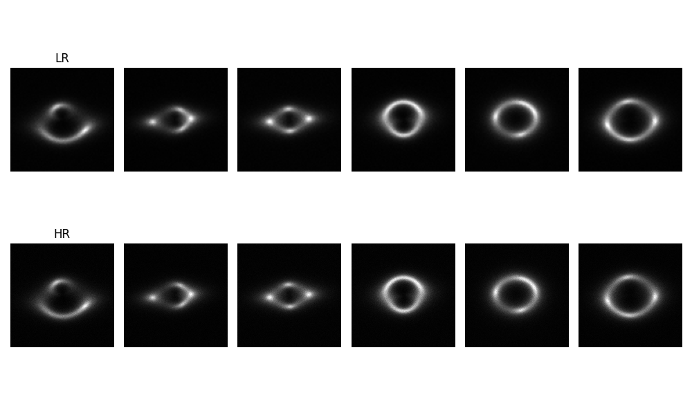
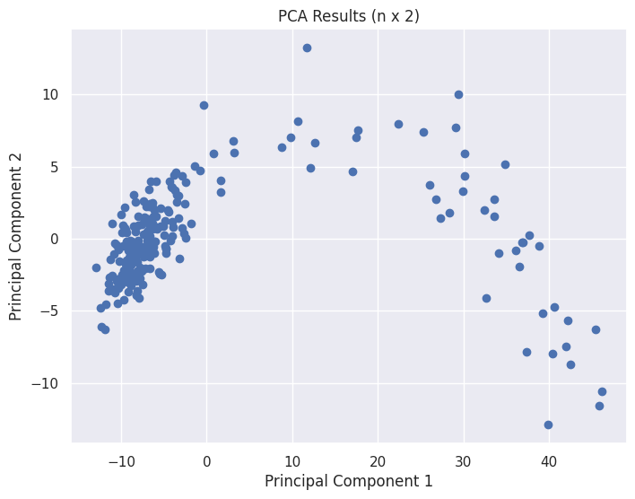
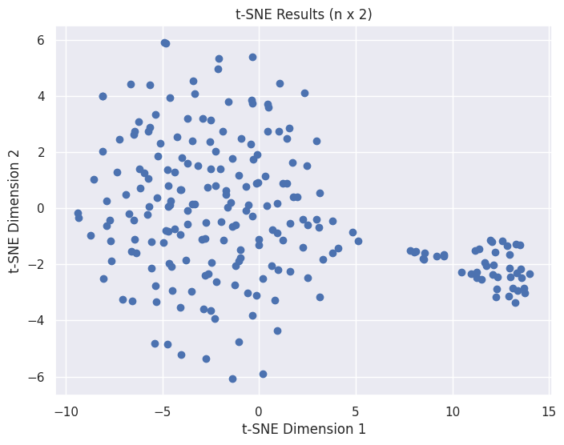

Scientific imaging · DeepLense GSoC 2025
Learning representations of gravitational lenses.
A masked autoencoder pipeline for strong-lensing images, followed by downstream experiments in multi-class classification and super-resolution.
Scientific question
Can a model learn useful visual representations from unlabeled strong-lensing images, and can those representations support related classification and image-reconstruction tasks?


Approach
- Pretrained a Vision Transformer masked autoencoder on no-substructure samples, reconstructing masked image patches with mean squared error.
- Fine-tuned the learned encoder for multi-class classification across no_sub, axion, and cdm image classes.
- Evaluated a super-resolution task using low-resolution inputs and high-resolution targets, reporting MSE, PSNR, and SSIM.


Results in the report
The classification report records approximately 97% accuracy on the reported evaluation set. For super-resolution, the report records the following final validation metrics:
The project report notes that the reconstruction decoder was not yet well suited to super-resolution; these results are an experimental baseline, not a final architecture claim.
Classification evaluation


Classification report
precision recall f1-score support
no_sub 0.97 0.99 0.98 2945
axion 0.98 0.97 0.97 2990
cdm 0.97 0.95 0.96 2976
accuracy 0.97 8911
macro avg 0.97 0.97 0.97 8911
weighted avg 0.97 0.97 0.97 8911
Super-resolution evaluation


Representation learning
Embedding visualizations provide a qualitative view of the learned feature space. They complement, but do not replace, held-out quantitative evaluation.

